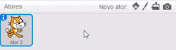
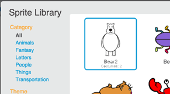
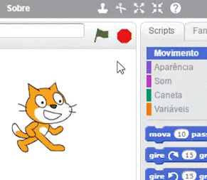

Escolha uma Coisa de Que Gosta
Comece adicionando uma de suas coisas favoritas.
Clique em  para escolher um novo ator:
para escolher um novo ator:

Por exemplo, você poderia escolher seu animal favorito:

Não consegue encontrar a imagem que você quer? Desenhe seu próprio ator ou importe uma imagem
ou importe uma imagem  .
.
Quer excluir o gato? Clique na tesoura e depois clique no gato:
